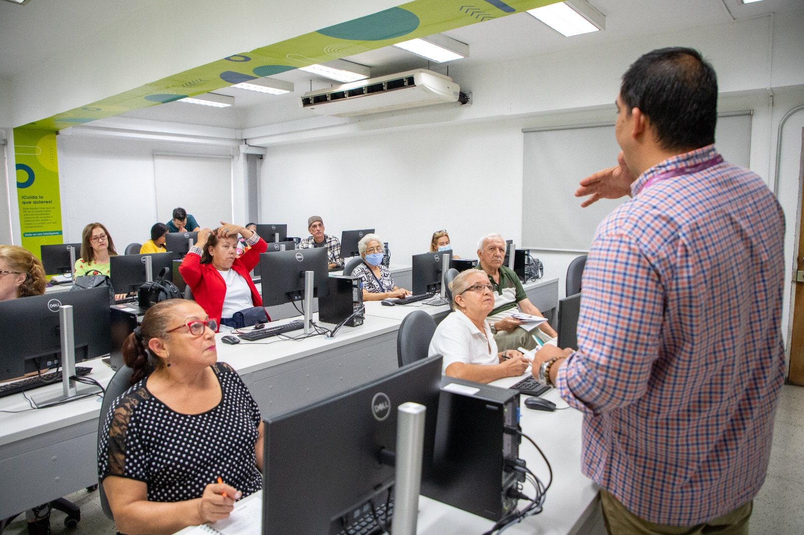
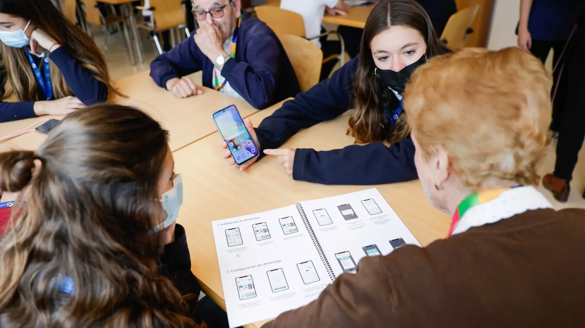

Adultos Mayores
Clases de uso de celular, internet y redes sociales.
Promoviendo la inclusión digital para todas las edades
Somos una ONG dedicada a reducir la brecha digital, brindando herramientas tecnológicas a adultos mayores y fomentando el aprendizaje digital en jóvenes.


La tecnología es mejor cuando reúne a la gente.
En Conectando Generaciones trabajamos para construir una sociedad más inclusiva, donde todas las personas puedan acceder a la tecnología sin importar su edad.
Nuestro equipo está formado por voluntarios apasionados por la educación digital, que acompañan a adultos mayores en el uso de herramientas tecnológicas y guían a jóvenes en su desarrollo digital.
Garantizar el acceso igualitario a la tecnología, promoviendo la inclusión digital y fortaleciendo la conexión entre generaciones.
Clases de uso de celular, internet y redes sociales.
Capacitación en herramientas digitales y programación básica.
Encuentros entre jóvenes y adultos para compartir conocimientos.